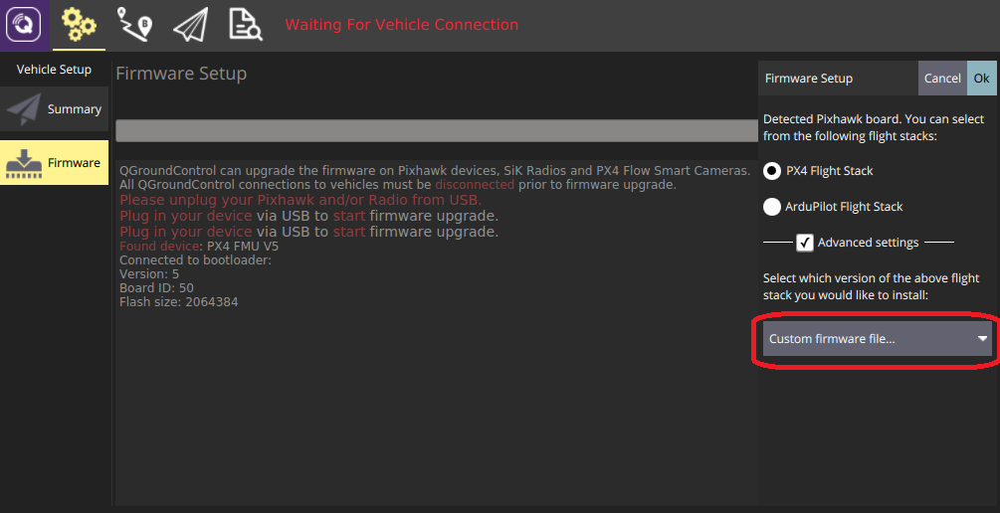

添加一个新的机型
PX4使用存储的配置作为机型的起始点。 机体的配置在ROMFS/px4fmu_common/init.d文件夹下的配置文件中定义。 配置文件中引用了用于描述机体物理结构的混控文件，该类文件存储在ROMFS/px4fmu_common/mixers文件夹下。
添加配置是非常简单的：在 init.d 文件夹下创建一个新的文件（使用未使用的 autostart ID 作为文件名的前缀），然后构建并上传固件即可。
如果不想创建自己的配置文件，也可以用SD卡上的文本文件替换掉已有的自定义配置文件，具体细节请查看自定义系统启动页。
配置文件概述
配置和混控文件中的机型配置包括如下几个主要模块：
- 机架说明文档(被Airframes Reference和QGroundControl) 使用。
- 飞机特定的参数设置，包括参数整定增益。
- 应该启动的应用，例如多旋翼或者固定翼的控制器，着陆检测等等。
- 系统（固定翼，飞翼或者多旋翼）的物理配置。 在这里我们称之为 混控器。
上述几个模块在很大程度上都是相互独立的，这就意味着很多配置共用同一套机架的物理结构、启动同样的应用，仅在参数整定增益上有较大区别。
新的机型配置文件仅在执行干净的构建后（运行命令
make clean）才会被自动添加到构建系统中。
配置文件
A typical configuration file is shown below (original file here).
第一部分是关于机身框架的文档说明。 Airframes Reference 和 QGroundControl 会用到该部分内容。
#!nsh
#
# @name Wing Wing (aka Z-84) Flying Wing
#
# @url https://docs.px4.io/master/en/framebuild_plane/wing_wing_z84.html
#
# @type Flying Wing
# @class Plane
#
# @output MAIN1 left aileron
# @output MAIN2 right aileron
# @output MAIN4 throttle
#
# @output AUX1 feed-through of RC AUX1 channel
# @output AUX2 feed-through of RC AUX2 channel
# @output AUX3 feed-through of RC AUX3 channel
#
# @maintainer Lorenz Meier <lorenz@px4.io>
#
接下来的一部分指定飞机特定的参数，包括调整增益：
sh /etc/init.d/rc.fw_defaults
if [ $AUTOCNF == yes ]
then
param set BAT_N_CELLS 2
param set FW_AIRSPD_MAX 15
param set FW_AIRSPD_MIN 10
param set FW_AIRSPD_TRIM 13
param set FW_R_TC 0.3
param set FW_P_TC 0.3
param set FW_L1_DAMPING 0.74
param set FW_L1_PERIOD 16
param set FW_LND_ANG 15
param set FW_LND_FLALT 5
param set FW_LND_HHDIST 15
param set FW_LND_HVIRT 13
param set FW_LND_TLALT 5
param set FW_THR_LND_MAX 0
param set FW_PR_FF 0.35
param set FW_RR_FF 0.6
param set FW_RR_P 0.04
fi
设置机身框架类型（MAV_TYPE）
# 配置此为固定翼
set MAV_TYPE 1
设置需要使用的混控器:
# 设定混控
set MIXER wingwing
配置PWM输出(指定驱动/激活的输出和级别)。
# 向 ESC 提供一个常值 1000 us 脉冲
set PWM_OUT 4
set PWM_DISARMED 1000
：如果你想将某一个通道反相, 千万不要在你的遥控器上这样做或者改变例如
RC1_REV这样的参数. 这些参数只会在你使用手动模式飞行的时候才会反相, 当你切换到飞控控制的飞行模式时, 这些通道输出依然是错误的(它只会改变你的遥控器的信号) 因此，对于一个正确的通道分配，要么改变PWM信号与PWM_MAIN_REV1（例如，对于通道1），要么改变相应混控器的输出缩放系数（见下文）。
混控器文件
你应首先阅读 概念 > 混控器 页面， 该页面中的内容提供了理解如下混控器文件所需的背景知识。
下面展示了一个典型的混控器文件（原始文件在这里）。 混控器文件的文件名，在这里的案例中也就是 wingwing.main.mix，向我们提供了包括机型类型（wingwing），输出类型（.main 或者 .aux）和它是一个混控器定义文件（.mix）这三个重要信息。
混频器文件包含多个代码块，每个代码块都针对一个执行器或电调。 因此，如果你有两个执行器和一个 ESC，那么你的混控器文件应该包含三个代码块。
舵机 / 电机应按照混控器文件中的定义顺序对应地接入飞控。
所以 MAIN1 应为左副翼，MAIN2 应为为右副翼 ，MAIN3 为空 （这里需要注意的是 Z: 表示混控器为空），MAIN4 为油门（在常规固定翼机型配置中应保持油门在 4 号输出位置上）。
混控器以 -10000 到 10000 这一范围进行单位化编码，其分别对应于 -1.. + 1。
M: 2
O: 10000 10000 0 -10000 10000
S: 0 0 -6000 -6000 0 -10000 10000
S: 0 1 6500 6500 0 -10000 10000
上述定义中从左到右每一个数字所代表的意思是：
- M: 数字 2 表示该输出通道对应两个控制输入， 该参数表示混控器将接受到的控制输入的数量。
- O: Indicates the output scaling (1 in negative, 1 in positive), offset (zero here), and output range (-1..+1 here).
- If you want to invert your PWM signal, the signs of the output scalings have to be changed:
O: -10000 -10000 0 -10000 10000 - 如果这一行设定的是如下默认值，那么我们也可以（也应该）完全省略这一行：
O: 10000 10000 0 -10000 10000
- If you want to invert your PWM signal, the signs of the output scalings have to be changed:
- S：表示第一个输入的缩放器：它取控制组 #0 (Flight Control) 的第一个控制量（滚转）作为输入。 它将滚转控制输入 * 0.6 进行缩放并反转输入量的正负号（-0.6 在缩放后的单位中变成了 -6000）。 该混控器不施加任何偏移量（0）且输出量幅值在 （-1.. +1）这个范围内。
- S：表示第二个输入的缩放器：它取控制组 #0 (Flight Control) 的第二个控制量（俯仰）作为输入。 \ It scales the pitch control input * 0.65. 不施加任何偏移量（0）并且输出量的幅值在 （-1.. +1）这个范围内。
In short, the output of this mixer would be SERVO = ( (roll input * -0.6 + 0) * 1 + (pitch input * 0.65 + 0) * 1 ) * 1 + 0
程序后台会对两个缩放器的值进行求和，这就意味着对于这个飞翼来说该控制舵面最大从滚转信号中取 60% 的舵面偏转、从俯仰信号中最大取 65% 的舵面偏转。
完整的混控器如下所示:
Delta-wing mixer for PX4FMU
===========================
Designed for Wing Wing Z-84
This file defines mixers suitable for controlling a delta wing aircraft using
PX4FMU. The configuration assumes the elevon servos are connected to PX4FMU
servo outputs 0 and 1 and the motor speed control to output 3. Output 2 is
assumed to be unused.
Inputs to the mixer come from channel group 0 (vehicle attitude), channels 0
(roll), 1 (pitch) and 3 (thrust).
See the README for more information on the scaler format.
Elevon mixers
-------------
Three scalers total (output, roll, pitch).
The scaling factor for roll inputs is adjusted to implement differential travel
for the elevons.
This first block of code is for Servo 0...
M: 2
O: 10000 10000 0 -10000 10000
S: 0 0 -6000 -6000 0 -10000 10000
S: 0 1 6500 6500 0 -10000 10000
And this is for Servo 1...
M: 2
O: 10000 10000 0 -10000 10000
S: 0 0 -6000 -6000 0 -10000 10000
S: 0 1 -6500 -6500 0 -10000 10000
Note that in principle, you could implement left/right wing asymmetric mixing, but in general the two blocks of code will be numerically equal, and just differ by the sign of the third line (S: 0 1), since to roll the plane, the two ailerons must move in OPPOSITE directions.
The signs of the second lines (S: 0 0) are indentical, since to pitch the plane, both servos need to move in the SAME direction.
Output 2
--------
This mixer is empty.
Z:
Motor speed mixer
-----------------
Two scalers total (output, thrust).
This mixer generates a full-range output (-1 to 1) from an input in the (0 - 1)
range. Inputs below zero are treated as zero.
M: 1
O: 10000 10000 0 -10000 10000
S: 0 3 0 20000 -10000 -10000 10000
增加一个新的机型组（Airframe Group）
Airframe "groups" are used to group similar airframes for selection in QGroundControl and in the Airframe Reference documentation (PX4 DevGuide and PX4 UserGuide). 每个组都有一个名称和与之相关联的 svg 图像，该图像展示了该分组内的机型的通用几何形状、电机数量和电机旋转方向。
使用编译指令 make airframe_metadata 可以运行脚本自动根据机型描述语句生成需要在 QGroundControl 中使用的机型元数据文件和文档源代码。
如果新机型属于现有某一个分组，那么你只需要在向位于 ROMFS/px4fmu_common/init.d 文件夹下的机型描述文件中提供相关文档即可。
如果机型属于一个 新的组 那么你还需要进行如下操作：
- 向文档仓库添加该机型组的 svg 图像文件（如果未添加图像文件则会显示一个占位符图像）：
- PX4 开发指南： assets/airframes/types
- PX4 用户指南： assets/airframes/types
在 srcparser.py 文件的
GetImageName()中添加机型组名称与图像文件名的映射关系（遵循如下模式）： def GetImageName(self):""" Get parameter group image base name (w/o extension) """ if (self.name == "Standard Plane"): return "Plane" elif (self.name == "Flying Wing"): return "FlyingWing" ......
return "AirframeUnknown"更新 QGroundControl：
- 将该机型组的 svg 图像文件添加至： src/AutopilotPlugins/Common/images
Add reference to the svg image into qgcimages.qrc, following the pattern below:
... <file alias="Airframe/AirframeSimulation">src/AutoPilotPlugins/Common/Images/AirframeSimulation.svg</file> <file alias="Airframe/AirframeUnknown">src/AutoPilotPlugins/Common/Images/AirframeUnknown.svg</file> <file alias="Airframe/Boat">src/AutoPilotPlugins/Common/Images/Boat.svg</file> <file alias="Airframe/FlyingWing">src/AutoPilotPlugins/Common/Images/FlyingWing.svg</file> ... >Note 剩下的机型元数据会自动包含在固件中（只要 srcparser.py 完成了更新）。
调参
下面的 PX4 User Guide 话题解释了如何对那些需要在配置文件中明确的参数进行调整：
将新的机型加入到 QGroundControl
To make a new airframe available for section in the QGroundControl airframe configuration:
- 创建一个干净的生成（例如，先运行
make clean指令，然后再运行make px4_fmu-v5_default） 打开 QGC 然后如下图所示单击 Custom firmware file...：

随后你将会被要求选择需要被载入的 .px4 固件文件（该文件是一个被压缩的 JSON 文件，文件内包含了机型的元数据）。
导航到构建文件夹然后选择相应的固件文件 （例如， Firmware/build/px4_fmu-v5_default/px4_fmu-v5_default.px4）。
单击 OK 开始载入固件。
- 重启 QGroundControl。
新的机型现在应可以在 QGroundControl 中进行选择了。